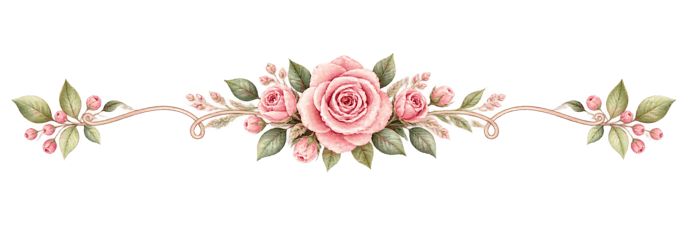

Our story began in 2017 at St. Rita’s College of Balingasag, when I arrived as a transferee student from USTP. We became schoolmates and, unexpectedly, classmates in one subject—Filipino III. At that time, however, we were both already in relationships, and neither of us could have imagined that our paths would one day lead us here.
A Journey Written by God
Jelai & Jhun
Our Story
December 28, 2026 · A Promise of Forever
Some stories begin long before we understand their purpose. Ours is a story of unexpected encounters, separate journeys, and the beautiful timing of God.

Chapter One
Where Our Paths First Crossed
Sometimes, the beginning is hidden inside an ordinary day.


Chapter Two
Separate Paths, One Beautiful Plan
Even when life takes us in different directions, God never loses sight of the way.
Years passed, and life took us in different directions. By 2024, we had both become professionals, each faithfully pursuing a different calling. You became a police officer, dedicating yourself to protecting and serving the community. I was still serving in DepEd while continuing to pursue my application to transfer to the Bureau of Fire Protection. We were building our own lives, unaware that God was quietly preparing our paths to meet again.


A Love Guided by Faith
More Than Coincidence
Looking back, we now understand that our meeting was never simply a matter of luck or coincidence. When the Lord prepared both of our hearts, He was writing a divine design—one that we could not yet see, but that He had already planned.
What seemed like an unexpected encounter in college became something far greater: a second chapter, a love story, and a future we now pray will last in accordance with God’s will. Some moments in life seem ordinary when they happen, only to reveal their purpose much later.
And perhaps that is the beauty of God’s timing. He allowed our paths to cross before we were ready, then brought us together again when our hearts and lives were prepared. What began as an unexpected connection in college has become a love we choose, a future we look forward to, and a journey we entrust completely to Him.
Our story is not about perfect timing—it is about divine timing. And after all the years, changes, and seasons that brought us here, we are grateful that God led us back to each other, exactly when He knew we were ready.